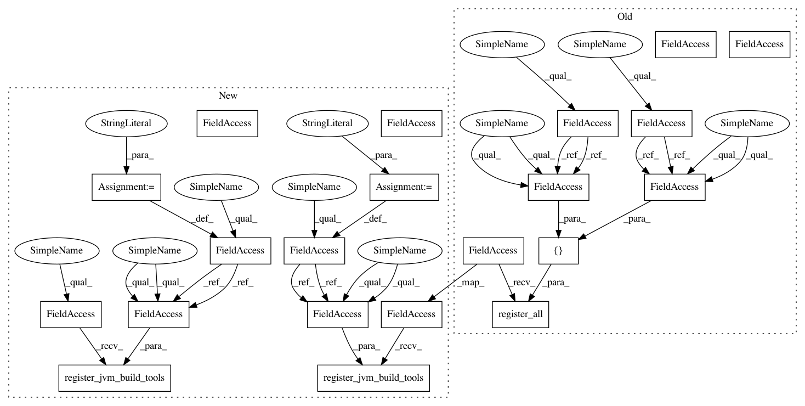

a0a4eba7bf111138c9660e35e34e665961d1e720,src/python/twitter/pants/tasks/benchmark_run.py,BenchmarkRun,__init__,#BenchmarkRun#Any#,39
Before Change
self.java_args = config.getlist("benchmark-run", "args",
default=["-Xmx1g", "-XX:MaxPermSize=256m"])
self._benchmark_bootstrap_tools = config.getlist("benchmark-run", "bootstrap-tools",
default=[":benchmark-caliper-0.5"])
self._agent_bootstrap_tools = config.getlist("benchmark-run",
"agent_profile",
default=[":benchmark-java-allocation-instrumenter-2.1"])
self._bootstrap_utils.register_all([self._benchmark_bootstrap_tools,
self._agent_bootstrap_tools])
// TODO(Steve Gury):
// Find all the target classes from the Benchmark target itself
// https://jira.twitter.biz/browse/AWESOME-1938
After Change
self.java_args = config.getlist("benchmark-run", "args",
default=["-Xmx1g", "-XX:MaxPermSize=256m"])
self._benchmark_bootstrap_key = "benchmark-tool"
benchmark_bootstrap_tools = config.getlist("benchmark-run", "bootstrap-tools",
default=[":benchmark-caliper-0.5"])
self._bootstrap_utils.register_jvm_build_tools(self._benchmark_bootstrap_key, benchmark_bootstrap_tools)
self._agent_bootstrap_key = "benchmark-agent"
agent_bootstrap_tools = config.getlist("benchmark-run", "agent_profile",
default=[":benchmark-java-allocation-instrumenter-2.1"])
self._bootstrap_utils.register_jvm_build_tools(self._agent_bootstrap_key, agent_bootstrap_tools)
// TODO(Steve Gury):
// Find all the target classes from the Benchmark target itself
// https://jira.twitter.biz/browse/AWESOME-1938
In pattern: SUPERPATTERN
Frequency: 3
Non-data size: 21
Instances
Project Name: pantsbuild/pants
Commit Name: a0a4eba7bf111138c9660e35e34e665961d1e720
Time: 2013-11-25
Author: benjy@foursquare.com
File Name: src/python/twitter/pants/tasks/benchmark_run.py
Class Name: BenchmarkRun
Method Name: __init__
Project Name: pantsbuild/pants
Commit Name: a0a4eba7bf111138c9660e35e34e665961d1e720
Time: 2013-11-25
Author: benjy@foursquare.com
File Name: src/python/twitter/pants/tasks/java_compile.py
Class Name: JavaCompile
Method Name: __init__
Project Name: pantsbuild/pants
Commit Name: a0a4eba7bf111138c9660e35e34e665961d1e720
Time: 2013-11-25
Author: benjy@foursquare.com
File Name: src/python/twitter/pants/tasks/junit_run.py
Class Name: JUnitRun
Method Name: __init__
Project Name: pantsbuild/pants
Commit Name: a0a4eba7bf111138c9660e35e34e665961d1e720
Time: 2013-11-25
Author: benjy@foursquare.com
File Name: src/python/twitter/pants/tasks/benchmark_run.py
Class Name: BenchmarkRun
Method Name: __init__